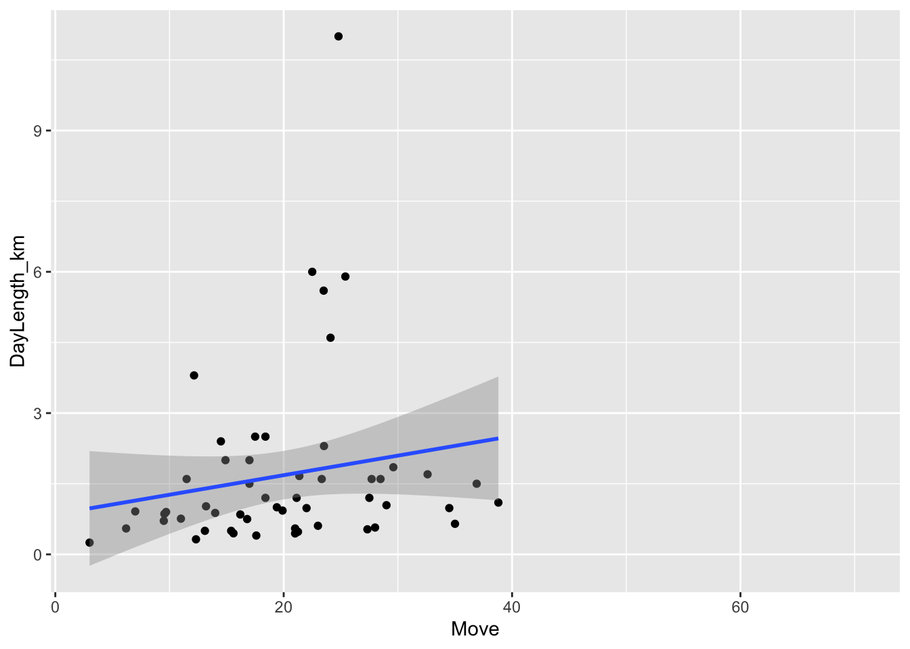
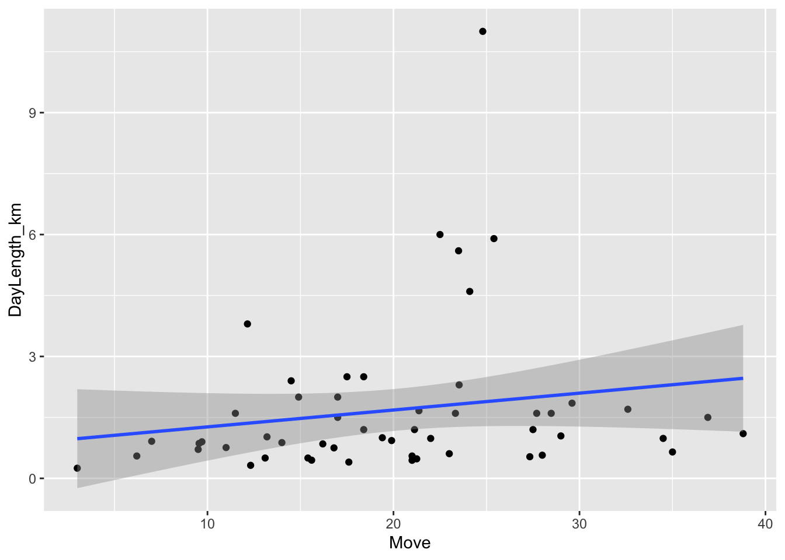
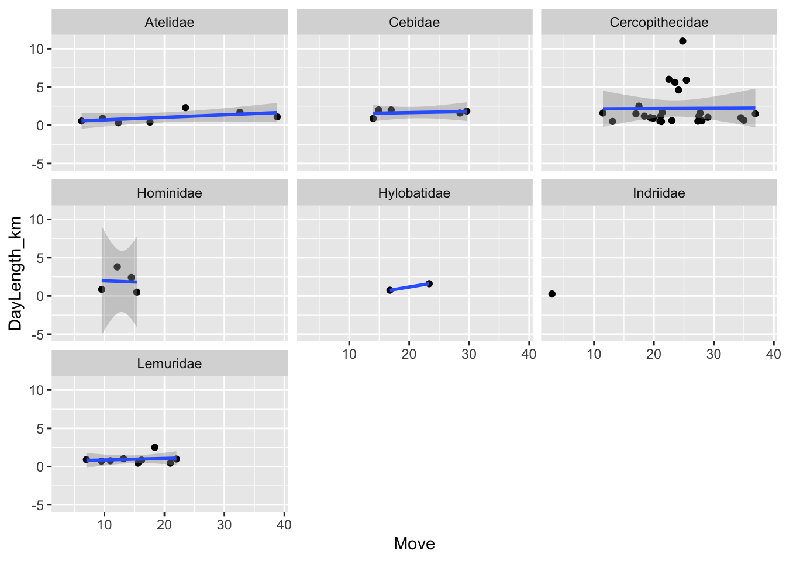
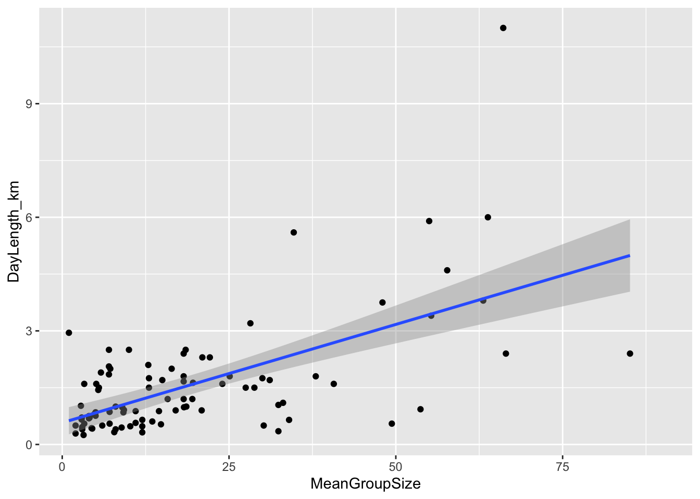
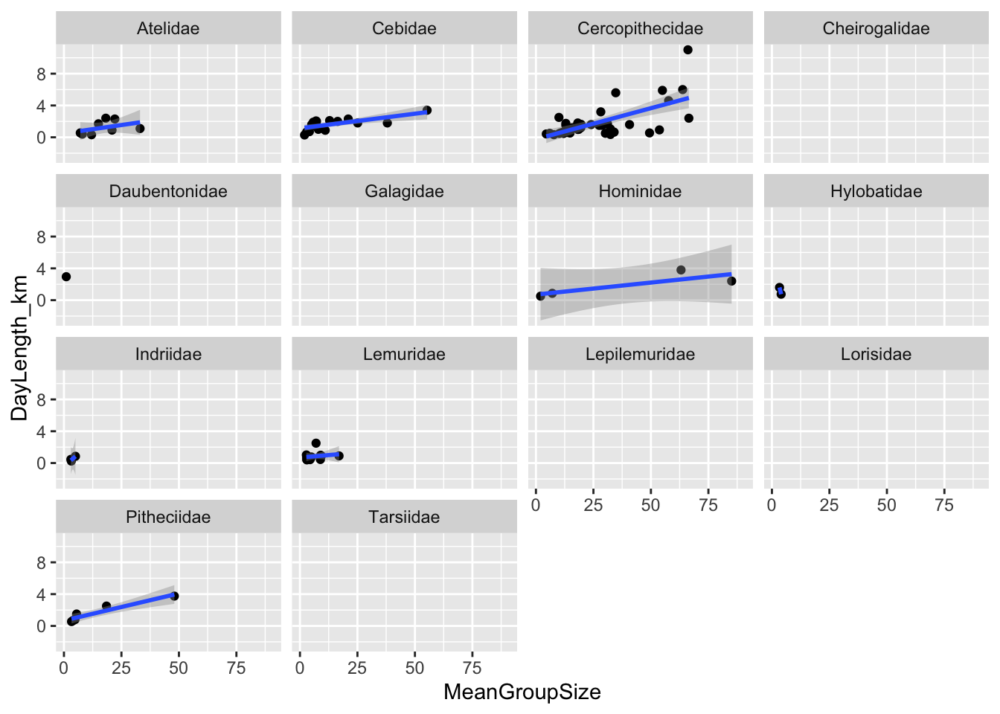
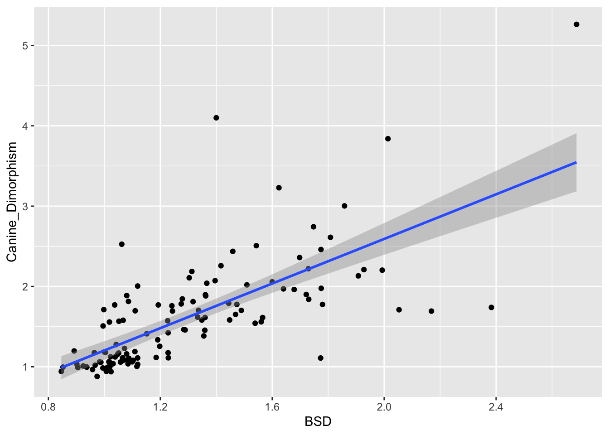
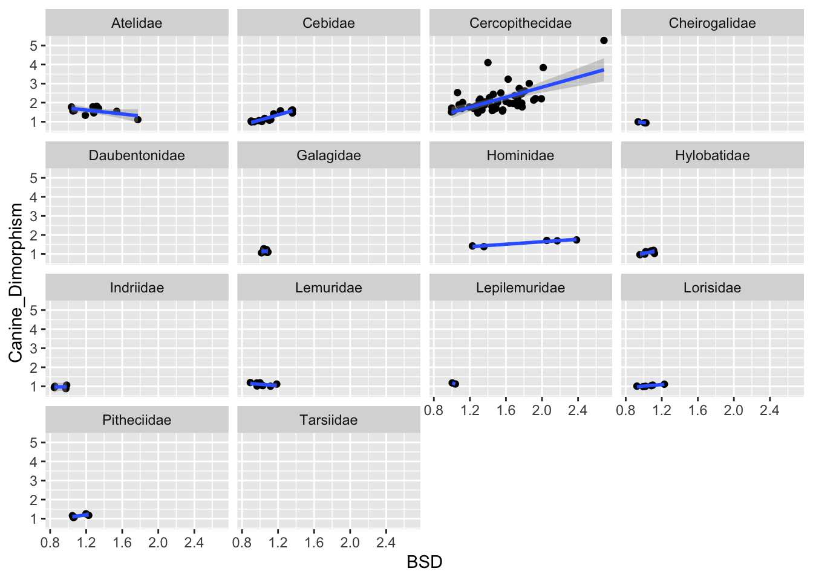
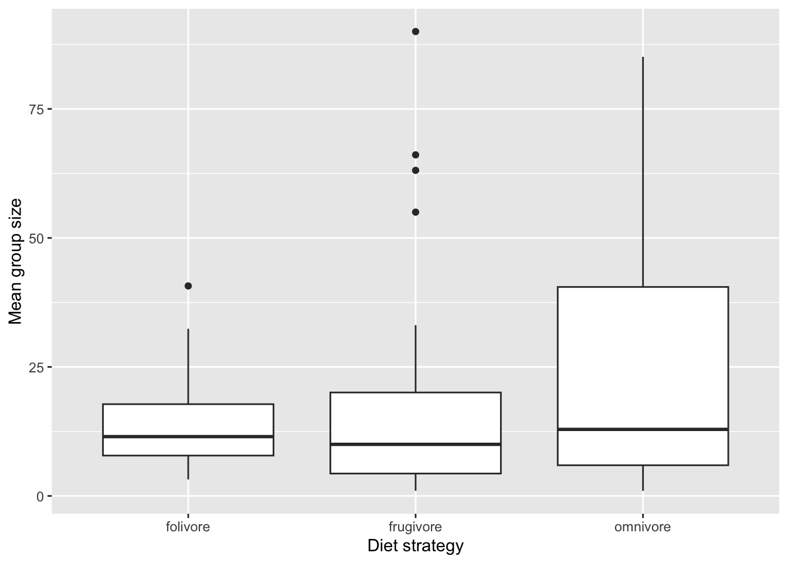

── Attaching core tidyverse packages ──────────────────────── tidyverse 2.0.0 ──
✔ dplyr 1.1.4 ✔ readr 2.1.5
✔ forcats 1.0.0 ✔ stringr 1.5.2
✔ ggplot2 4.0.0 ✔ tibble 3.3.0
✔ lubridate 1.9.4 ✔ tidyr 1.3.1
✔ purrr 1.1.0
── Conflicts ────────────────────────────────────────── tidyverse_conflicts() ──
✖ dplyr::filter() masks stats::filter()
✖ dplyr::lag() masks stats::lag()
ℹ Use the conflicted package (<http://conflicted.r-lib.org/>) to force all conflicts to become errors
f <-"https://raw.githubusercontent.com/difiore/ada-datasets/main/data-wrangling.csv"d <-read_csv(f, col_names =TRUE)
Rows: 213 Columns: 23
── Column specification ────────────────────────────────────────────────────────
Delimiter: ","
chr (6): Scientific_Name, Family, Genus, Species, Leaves, Fauna
dbl (17): Brain_Size_Species_Mean, Body_mass_male_mean, Body_mass_female_mea...
ℹ Use `spec()` to retrieve the full column specification for this data.
ℹ Specify the column types or set `show_col_types = FALSE` to quiet this message.
Scientific_Name Family Genus Species
Length:213 Length:213 Length:213 Length:213
Class :character Class :character Class :character Class :character
Mode :character Mode :character Mode :character Mode :character
Brain_Size_Species_Mean Body_mass_male_mean Body_mass_female_mean
Min. : 1.63 Min. : 31 Min. : 30.0
1st Qu.: 13.95 1st Qu.: 865 1st Qu.: 835.5
Median : 61.45 Median : 4290 Median : 3039.0
Mean : 68.11 Mean : 8112 Mean : 5396.5
3rd Qu.: 88.48 3rd Qu.: 7815 3rd Qu.: 6390.0
Max. :491.27 Max. :170400 Max. :97500.0
NA's :42 NA's :18 NA's :18
MeanGroupSize AdultMales AdultFemale GR_MidRangeLat_dd
Min. : 1.00 Min. : 0.900 Min. : 1.000 Min. :-24.500
1st Qu.: 4.00 1st Qu.: 1.000 1st Qu.: 1.000 1st Qu.:-13.625
Median : 7.80 Median : 1.500 Median : 2.900 Median : -0.760
Mean :15.06 Mean : 2.516 Mean : 5.049 Mean : -1.796
3rd Qu.:18.50 3rd Qu.: 3.100 3rd Qu.: 7.100 3rd Qu.: 6.785
Max. :90.00 Max. :16.000 Max. :25.200 Max. : 35.880
NA's :60 NA's :68 NA's :68 NA's :38
Precip_Mean_mm Temp_Mean_degC HomeRange_km2 DayLength_km
Min. : 419 Min. : 2.60 Min. : 0.0020 Min. : 0.250
1st Qu.:1190 1st Qu.:21.95 1st Qu.: 0.0600 1st Qu.: 0.708
Median :1542 Median :24.30 Median : 0.2750 Median : 1.212
Mean :1543 Mean :23.13 Mean : 1.9379 Mean : 1.551
3rd Qu.:1857 3rd Qu.:25.20 3rd Qu.: 0.8995 3rd Qu.: 1.800
Max. :2794 Max. :27.40 Max. :28.2400 Max. :11.000
NA's :38 NA's :38 NA's :65 NA's :104
Fruit Leaves Fauna Canine_Dimorphism
Min. : 1.00 Length:213 Length:213 Min. :0.880
1st Qu.:27.00 Class :character Class :character 1st Qu.:1.109
Median :48.00 Mode :character Mode :character Median :1.560
Mean :47.74 Mean :1.617
3rd Qu.:68.00 3rd Qu.:1.883
Max. :97.00 Max. :5.263
NA's :98 NA's :92
Feed Move Rest Social
Min. : 9.00 Min. : 3.00 Min. : 4.00 Min. : 0.900
1st Qu.:21.75 1st Qu.:14.93 1st Qu.:18.38 1st Qu.: 3.500
Median :33.30 Median :21.00 Median :30.48 Median : 5.400
Mean :33.08 Mean :21.67 Mean :34.26 Mean : 7.369
3rd Qu.:43.08 3rd Qu.:26.90 3rd Qu.:52.40 3rd Qu.:10.000
Max. :63.90 Max. :70.60 Max. :78.50 Max. :23.500
NA's :141 NA's :143 NA's :143 NA's :136
Coding Challenges
Challenge 1
## Create a new variable named BSD (body size dimorphism) which is the ratio of average male to female body mass. ### Using dplyr, we create a new column called BSD by first piping the dataset d, then piping d to argument mutate (dplyr) and defining BSD as the ratio of avg male to female body massd <- d |>mutate(BSD =paste0(Body_mass_male_mean/Body_mass_female_mean))# extra steps - checking results summary(d$BSD) # noticed that BSD is classified as character, not numeric, so changing that in the next line
Length Class Mode
213 character character
d$BSD <-as.numeric(d$BSD)
Warning: NAs introduced by coercion
mean(d$BSD, na.rm =TRUE) # testing that a function on numeric variable works to make sure BSD is no longer a character
[1] 1.245997
Challenge 2
## Create a new variable named sex_ratio, which is the ratio of the number of adult females to adult males in a typical group.### Similar workflow to challenge one above. Using dplyr to pipe in d, then piping to mutate function to make new variable sex_ratio equal to the number of adult females divided by the number of adult males in a typical group (on average). names(d)
d <- d |>mutate(sex_ratio =paste0(AdultFemale/AdultMales))# extra steps - checking results d$sex_ratio <-as.numeric(d$sex_ratio)
Warning: NAs introduced by coercion
mean(d$sex_ratio, na.rm =TRUE) # testing that a function on numeric variable works to make sure sex_ratio is no longer a character
[1] 2.166795
Challenge 3
## Create a new variable named DI (for “defensibility index”), which is the ratio of day range length to the *diameter* of the home range. ### Similar workflow again. Using dplyr to pipe in d, then piping to mutate function to make new variable DI equal to day range length divided by the diameter of the home range, but making sure to calculate the diameter.### From assignment: You will need to calculate the latter for each species from the size of its home range! For the purposes of this assignment, presume that the home range is a circle and use the formula for the area of a circle: . The variable pi (note, without parentheses!) will return the value of as a constant built-in to R, and the function sqrt() can be used to calculate the square root.# Presuming that HomeRange_km2 is the area of a circle (A), rearranging A=pi*r^2 to r = sqrt(A/pi), and 2r = d.names(d)
d <- d |>mutate(HomeRange_d =paste0(2* (sqrt(HomeRange_km2/pi))))d$HomeRange_d <-as.numeric(d$HomeRange_d)
Warning: NAs introduced by coercion
#now making new variable DI based on HomeRange_dd <- d |>mutate(DI =paste0(DayLength_km/HomeRange_d))# extra steps - checking results d$DI <-as.numeric(d$DI)
Warning: NAs introduced by coercion
mean(d$DI, na.rm =TRUE) # testing that a function on numeric variable works to make sure DI is no longer a character
[1] 2.230872
Challenge 4
## Plot the relationship between day range length (y axis) and time spent moving (x axis), for these primate species overall and by family (i.e., a different plot for each family, e.g., by using faceting: + facet_wrap()). Do species that spend more time moving travel farther overall? How about within any particular primate family? Should you transform either of these variables?# Here I am using ggplot to plot the data in a chart, then specifying I want the points added, but to exclude NAs, and then specifying that I want a line of best fit added using a linear model.p <-ggplot(d, aes(x = Move, y = DayLength_km)) +geom_point(na.rm =TRUE) +geom_smooth(method = lm)p
`geom_smooth()` using formula = 'y ~ x'
Warning: Removed 160 rows containing non-finite outside the scale range
(`stat_smooth()`).

### noticed that x-axis range was off, so now going to try filtering to a subset of data where both x and y values exist for each entry using inverse (!) function of is.nad_complete <- d |>subset(!is.na(Move) &!is.na(DayLength_km))p <-ggplot(d_complete, aes(x = Move, y = DayLength_km)) +geom_point() +geom_smooth(method = lm)p ### Fixed range!
`geom_smooth()` using formula = 'y ~ x'

### subsetting by Familyp <-ggplot(d_complete, aes(x = Move, y = DayLength_km)) +geom_point() +geom_smooth(method = lm) +facet_wrap("Family")p
`geom_smooth()` using formula = 'y ~ x'
Warning in qt((1 - level)/2, df): NaNs produced
Warning in max(ids, na.rm = TRUE): no non-missing arguments to max; returning
-Inf

Overall across species, there is a positive relationship between movement time (x-axis) and km traveled throughout the day. The pattern becomes more messy when we look at a more granular scale (Family), because not all families had good sampling. We see the pattern hold for families like Atelidae, but the relationship seems to not hold as well for Cercopithecidae and Lemuridae, while other families had small sample sizes. If we log-transformed movement time, we would end up potentially able to discern patterns easier in the visualization.
Challenge 5
## Plot the relationship between day range length (y axis) and group size (x axis), overall and by family. Do species that live in larger groups travel farther overall? How about within any particular primate family? Should you transform either of these variables?# Here I am using ggplot to plot the data in a chart, then specifying I want the points added, but to exclude NAs, and then specifying that I want a line of best fit added using a linear model.p <-ggplot(d, aes(x = MeanGroupSize, y = DayLength_km)) +geom_point(na.rm =TRUE) +geom_smooth(method = lm)p
`geom_smooth()` using formula = 'y ~ x'
Warning: Removed 120 rows containing non-finite outside the scale range
(`stat_smooth()`).

# subset by familyp <- p +facet_wrap("Family")p
`geom_smooth()` using formula = 'y ~ x'
Warning: Removed 120 rows containing non-finite outside the scale range
(`stat_smooth()`).
Warning in qt((1 - level)/2, df): NaNs produced
Warning in max(ids, na.rm = TRUE): no non-missing arguments to max; returning
-Inf

Yes, species that live in larger groups travel further when we look across species. Within particular families, speaking for those that have enough sampling effort, the trend holds for Hominidae, Cebidae, Atelidae, Cercopithecidae, Pitheciidae, and potentially for Lemuridae, although there is less variance in group size, so the pattern is less clear. Additionally, we could log-transform mean group size to clarify the pattern.
Challenge 6
# Plot the relationship between canine size dimorphism (y axis) and body size dimorphism (x axis) overall and by family. Do taxa with greater size dimorphism also show greater canine dimorphism?# Here I am using ggplot to plot the data in a chart, then specifying I want the points added, but to exclude NAs, and then specifying that I want a line of best fit added using a linear model.p <-ggplot(d, aes(x = BSD, y = Canine_Dimorphism)) +geom_point(na.rm =TRUE) +geom_smooth(method = lm)p
`geom_smooth()` using formula = 'y ~ x'
Warning: Removed 94 rows containing non-finite outside the scale range
(`stat_smooth()`).

# subset by familyp <- p +facet_wrap("Family")p
`geom_smooth()` using formula = 'y ~ x'
Warning: Removed 94 rows containing non-finite outside the scale range
(`stat_smooth()`).
Warning in qt((1 - level)/2, df): NaNs produced
Warning in max(ids, na.rm = TRUE): no non-missing arguments to max; returning
-Inf

Yes, taxa overall show greater canine dimorphism with greater body size dimorphism (BSD). Notably, the trend tends to hold across families except for in Atelidae, where the reverse is true.
Challenge 7
# Create a new variable named diet_strategy that is “frugivore” if fruits make up >50% of the diet, “folivore” if leaves make up >50% of the diet, and “omnivore” if diet data are available, but neither of these is true (i.e., these values are not NA). Then, do boxplots of group size for species with different dietary strategies, omitting the category NA from your plot. Do frugivores live in larger groups than folivores?# Here I am using the mutate function to create a new column, then using the function case_when because there are three categorical options, not just an if/then statement. To do this I call the variables by name and specify the condition (> 50) for each to make their category. For omnivores, I have specified that if the previous two conditions are not fulfilled, but there IS data for Fruit, and there IS data for Leaves, then specify the entry as an omnivore.d <- d |>mutate(diet_strategy =case_when(Fruit >50~"frugivore", Leaves >50~"folivore", !is.na(Fruit) |!is.na(Leaves) ~"omnivore")) # BOXPLOTS!# Now combining the piping function into the filter function, again using the inverse (!) is.na strategy to filter the data to only entries with data for both diet and mean group size. Then specifying I want a boxplot with geom_boxplot(), and then adding new labels with labs() function. boxplot <- d |>filter(!is.na(diet_strategy), !is.na(MeanGroupSize)) |>ggplot(aes(x = diet_strategy, y = MeanGroupSize)) +geom_boxplot() +labs(x ="Diet strategy",y ="Mean group size" )boxplot

No, frugivores do not seem to live in larger groups than foliovores, although there are some outliers in the frugivore data which have very large (>50) group members on average!